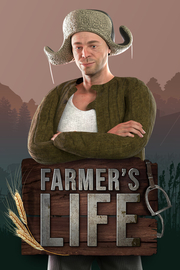

Farmer's Life
Detalles
|  | |
| Tiempo de juego | No Jugado |
| Última actividad | Nunca |
| Añadido | 11/13/2024 0:35:38 |
| Modificado | 11/13/2024 1:06:01 |
| Estado de finalización | No Jugado |
| Librería | Playnite |
| Fuente | PORCHE |
| Plataforma | PC (Windows) |
| Fecha de lanzamiento | 10/20/2023 |
| Puntuación de la Comunidad | 84 |
| Puntuación de la Crítica | |
| Puntuación de usuario | |
| Género | Acción Aventura Casual Indie Rol Simuladores |
| Desarrollador | FreeMind S.A. |
| Editor | FreeMind S.A. PlayWay S.A. |
| Característica | Cloud Saves Compat. Total Con Mando Cromos De Logros De Préstamo Familiar Un Jugador |
| Enlaces | Punto de encuentro Discusiones Guías Noticias Página de la tienda PCGamingWiki Logros |
| Tag | 3D Agrícolas Agricultura Caballos Casuales Cocina Construcción Divertidos Educación Fabricación Mundo abierto Para toda la familia Primera persona Relajantes Sandbox Simulación Simulador agrícola Simulador de trabajo Simulador inmersivo Un jugador |
Descripción
🌾 "Farmer's Life" - ¡Libera al granjero que llevas dentro! 🚜
Sumérgete en el encanto rústico de la vida rural en "Farmer's Life", donde experimentarás la alegría y los desafíos de la vida en una vibrante granja. Planta, cultiva y abraza un país que vive en un vasto mundo abierto. Tú tomas las decisiones, creas y eliges entre diversas mecánicas y posibilidades infinitas.

🐷 Cuida una variedad de animales: tus responsabilidades se extienden a gallinas, cerdos, cabras, ovejas, vacas e incluso majestuosos caballos. Cuídelos y le proporcionarán recursos valiosos.

🌾 La vida en la granja te espera: arremángate y ensúciate las manos mientras aras, plantas y cosechas para sustentar tu granja y tu medio de vida.

🛠️ Construye la granja de tus sueños: construye de todo, desde casas acogedoras hasta cercas resistentes, portones, cobertizos y más. Dale forma a tu granja según el deseo de tu corazón.

🍲 Te esperan aventuras culinarias: explora el arte de cocinar preparando una amplia variedad de comidas deliciosas y útiles con ingredientes de tu granja.
🏹 Caza de emociones: acepta el desafío de cazar zorros, jabalíes, ciervos e incluso osos. Convierte tus cacerías exitosas en trofeos y pieles.
🪓 Reúne la generosidad de la naturaleza: aventúrate en la naturaleza para recolectar madera, frambuesas, arándanos, setas, huevos y miel de las colmenas.

🍾 Elabora, compra, vende y bebe alcohol: conviértete en un maestro de la destilería mientras elaboras y vendes tus propias bebidas alcohólicas. ¡No olvides disfrutar los frutos de tu trabajo!
👰 Encuentre amor y compañía: experimente las alegrías de la vida matrimonial con una ceremonia de boda y un cónyuge que lo apoye para compartir su viaje.
💰 Comercio para la prosperidad: participe en el bullicioso mercado comercial, donde puede comprar y vender artículos para generar riqueza y expandir su granja.
💬 Te esperan misiones épicas: Embárcate en numerosas misiones que te mantendrán entretenido durante horas y desafiarán tus habilidades y tu capacidad para tomar decisiones.

🐎 Elige tu viaje: recorre tu granja con estilo. Ya sea que prefieras una bicicleta, un carro de caballos, un tractor o una motocicleta, ¡tienes opciones!
🌎 Libertad ilimitada: disfruta de una experiencia sandbox en la que tienes la libertad de decidir qué quieres hacer y cómo quieres gestionar tu granja.
🌱 Estaciones dinámicas: adáptese a las estaciones en constante cambio, donde las opciones y estrategias de cultivos son importantes durante todo el año.

🚜 Domina máquinas únicas: toma el control de una variedad de máquinas agrícolas únicas, desde cortadoras de césped hasta arados, sembradoras, excavadoras, esparcidoras y más.

💣 Un poco de caos: desahogate realizando actividades lúdicas como montar un cerdo y causar un caos inofensivo.
🗺️ Explora un mundo rico: descubre tesoros y secretos escondidos mientras exploras búnkeres, casas en ruinas, la antigua iglesia, campos minados, estanques y ríos sinuosos.
"Farmer's Life" no es sólo un juego; Es una cautivadora aventura agrícola en la que tus elecciones dan forma a tu destino. Descubre los placeres de la vida rural y sumérgete en un mundo de infinitas posibilidades. ¿Podrás construir tu imperio agrícola desde cero?
Sumérgete en el encanto rústico de la vida rural en "Farmer's Life", donde experimentarás la alegría y los desafíos de la vida en una vibrante granja. Planta, cultiva y abraza un país que vive en un vasto mundo abierto. Tú tomas las decisiones, creas y eliges entre diversas mecánicas y posibilidades infinitas.
🐷 Cuida una variedad de animales: tus responsabilidades se extienden a gallinas, cerdos, cabras, ovejas, vacas e incluso majestuosos caballos. Cuídelos y le proporcionarán recursos valiosos.
🌾 La vida en la granja te espera: arremángate y ensúciate las manos mientras aras, plantas y cosechas para sustentar tu granja y tu medio de vida.
🛠️ Construye la granja de tus sueños: construye de todo, desde casas acogedoras hasta cercas resistentes, portones, cobertizos y más. Dale forma a tu granja según el deseo de tu corazón.
🍲 Te esperan aventuras culinarias: explora el arte de cocinar preparando una amplia variedad de comidas deliciosas y útiles con ingredientes de tu granja.
🏹 Caza de emociones: acepta el desafío de cazar zorros, jabalíes, ciervos e incluso osos. Convierte tus cacerías exitosas en trofeos y pieles.
🪓 Reúne la generosidad de la naturaleza: aventúrate en la naturaleza para recolectar madera, frambuesas, arándanos, setas, huevos y miel de las colmenas.
🍾 Elabora, compra, vende y bebe alcohol: conviértete en un maestro de la destilería mientras elaboras y vendes tus propias bebidas alcohólicas. ¡No olvides disfrutar los frutos de tu trabajo!
👰 Encuentre amor y compañía: experimente las alegrías de la vida matrimonial con una ceremonia de boda y un cónyuge que lo apoye para compartir su viaje.
💰 Comercio para la prosperidad: participe en el bullicioso mercado comercial, donde puede comprar y vender artículos para generar riqueza y expandir su granja.
💬 Te esperan misiones épicas: Embárcate en numerosas misiones que te mantendrán entretenido durante horas y desafiarán tus habilidades y tu capacidad para tomar decisiones.
🐎 Elige tu viaje: recorre tu granja con estilo. Ya sea que prefieras una bicicleta, un carro de caballos, un tractor o una motocicleta, ¡tienes opciones!
🌎 Libertad ilimitada: disfruta de una experiencia sandbox en la que tienes la libertad de decidir qué quieres hacer y cómo quieres gestionar tu granja.
🌱 Estaciones dinámicas: adáptese a las estaciones en constante cambio, donde las opciones y estrategias de cultivos son importantes durante todo el año.
🚜 Domina máquinas únicas: toma el control de una variedad de máquinas agrícolas únicas, desde cortadoras de césped hasta arados, sembradoras, excavadoras, esparcidoras y más.
💣 Un poco de caos: desahogate realizando actividades lúdicas como montar un cerdo y causar un caos inofensivo.
🗺️ Explora un mundo rico: descubre tesoros y secretos escondidos mientras exploras búnkeres, casas en ruinas, la antigua iglesia, campos minados, estanques y ríos sinuosos.
"Farmer's Life" no es sólo un juego; Es una cautivadora aventura agrícola en la que tus elecciones dan forma a tu destino. Descubre los placeres de la vida rural y sumérgete en un mundo de infinitas posibilidades. ¿Podrás construir tu imperio agrícola desde cero?